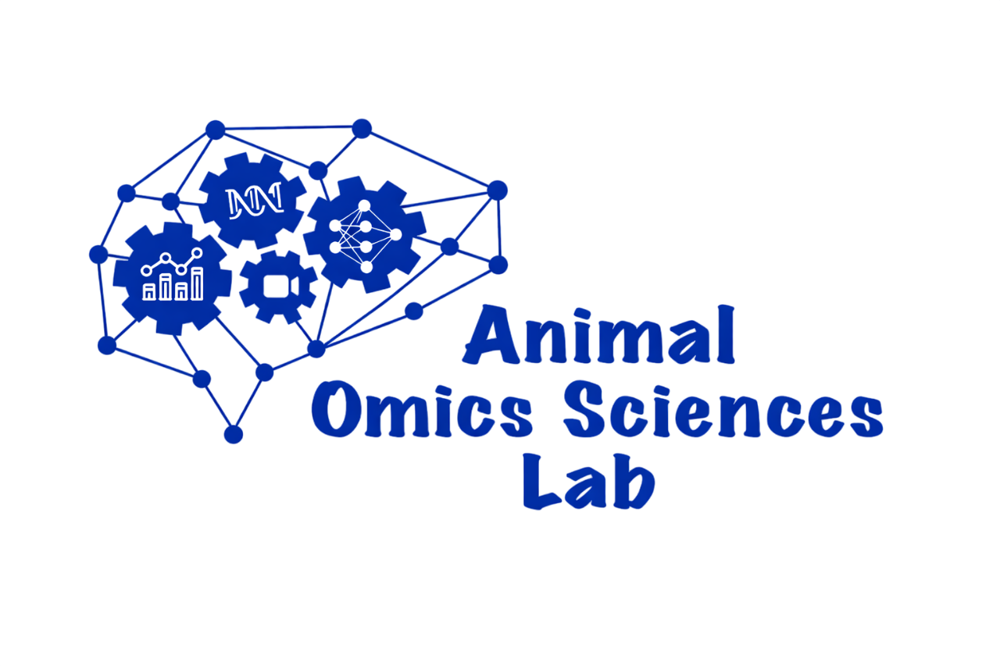

Education

Ph.D., Animal Sciences
Advisor: Dr. Haipeng Yu, Artificial Intelligence in Animal Omics Sciences Lab.
B.Sc., Electronics Engineering
Thesis: “Developing an Automated and Cost-Effective Animal Observation and Tracking System with the use of IoT and Machine Learning.”
Advisor: Engr. Myles Joshua T. Tan.